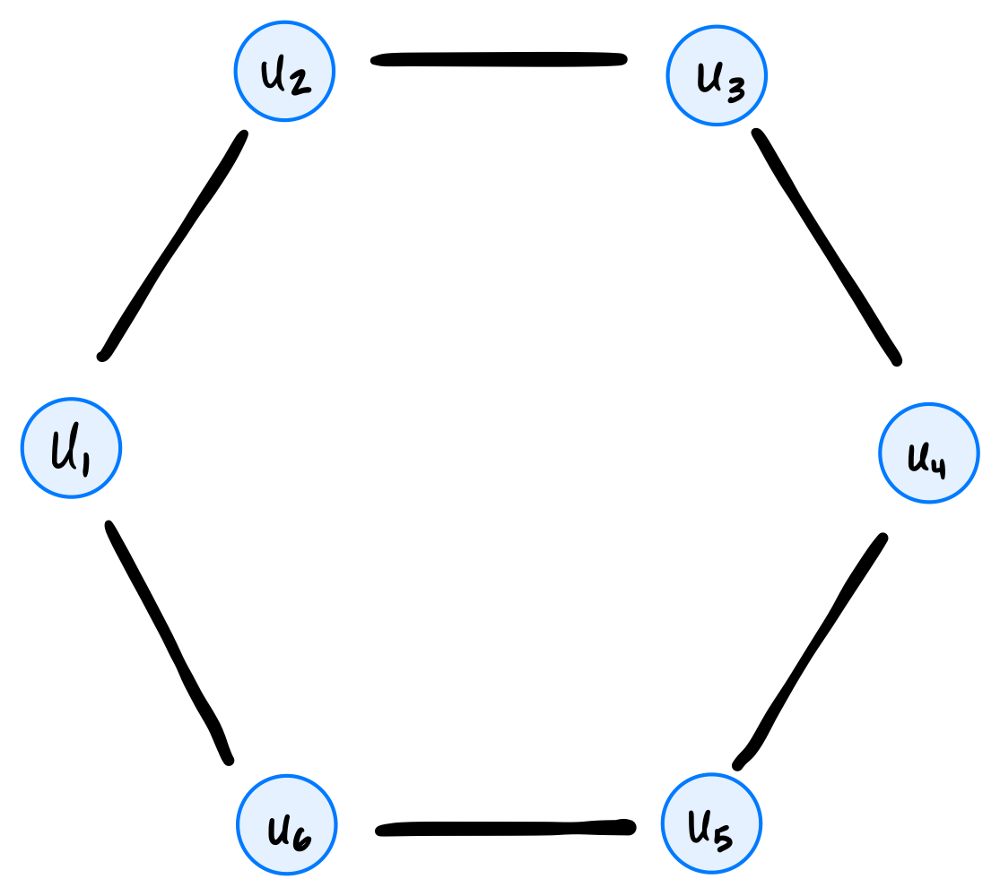
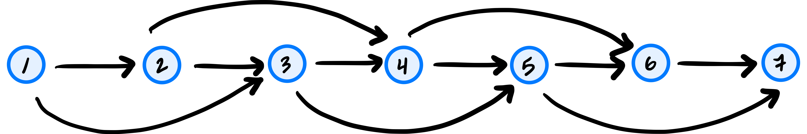
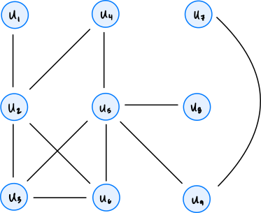
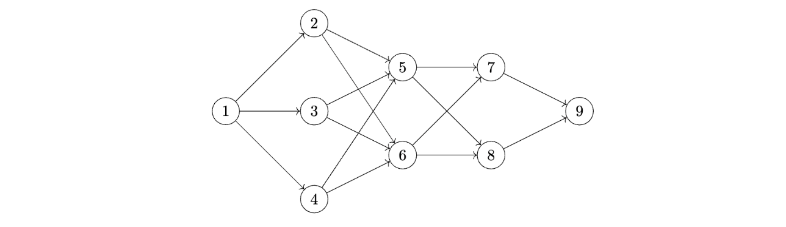
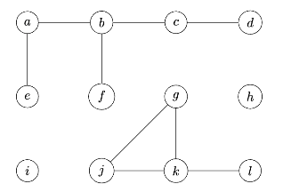

Problems tagged with "breadth first search"
Problem #105
Tags: breadth first search
Consider running a breadth-first search (BFS) on the graph shown below, using node \(s\) as the source and adopting the convention that neighbors are produced in ascending order by label.

How many nodes will be popped from the queue before node \(u_8\) is popped?
Solution
9
Problem #106
Tags: breadth first search, shortest paths
Suppose that a breadth-first search on an undirected graph \(G\) is paused and the queue is printed. Suppose that every node in the queue is either distance 5 from the source, or distance 6. At this moment, node \(u\) is undiscovered.
True or False: it is possible that node \(u\) is distance 4 from the source.
Solution
False.
Problem #107
Tags: breadth first search
Suppose a breadth-first search (BFS) is performed in order to calculate a dictionary of shortest path distances, dist, from a source node \(s\) to all nodes reachable from \(s\) in an undirected graph \(G = (V, E)\).
Suppose node \(u\) is a node in \(G\), and \(v_1\) and \(v_2\) are two neighbors of node \(u\). Assume that \(u\) is reachable from \(s\).
Part 1)
What is the largest that \(|\)dist[v_2] - dist[v_1]\(|\) can be?
Solution
2
Part 2)
What is the smallest that \(|\)dist[v_2] - dist[v_1]\(|\) can be?
Solution
0
Problem #108
Tags: breadth first search
Define a circle graph with \(n\) nodes to be an undirected graph \(G = (V, E)\) with nodes \(u_1, u_2, \ldots, u_n\) and edges \((u_1, u_2), (u_2, u_3), \ldots, (u_{n-1}, u_n)\), along with one additional edge \((u_n, u_1)\) completing the cycle. An example of a circle graph with 6 nodes is shown below:

What is the time complexity of breath-first search when run on a circle graph with \(n\) nodes? State your answer as a function of \(n\) using asymptotic notation.
Solution
\(\Theta(n)\)
Problem #109
Tags: aggregate analysis, breadth first search
Consider the code below, which is a modification of the code for bfs given in lecture:
from collections import deque
def modified_full_bfs(graph):
status = {node: 'undiscovered' for node in graph.nodes}
for node in graph.nodes:
if status[node] == 'undiscovered':
modified_bfs(graph, node, status)
def modified_bfs(graph, source, status=None):
"""Start a BFS at `source`."""
if status is None:
status = {node: 'undiscovered' for node in graph.nodes}
status[source] = 'pending'
pending = deque([source])
# while there are still pending nodes
while pending:
u = pending.popleft()
for v in graph.neighbors(u):
# explore edge (u,v)
if status[v] == 'undiscovered':
status[v] = 'pending'
# append to right
pending.append(v)
for z in graph.nodes: # <----- new line!
print(z, status[z]) # <----- new line!
status[u] = 'visited'
Notice the two new lines; these lines print all node statuses any time that an undiscovered node has been found.
What is the time complexity of this modified modified_full_bfs? State your answer in asymptotic notation in terms of the number of nodes, \(|V|\), and the number of edges, \(|E|\). You may assume that the graph is represented using an adjacency list, and that it is connected.
Solution
\(\Theta(V^2)\).
First, the newly-added code (the for z in graph.nodes loop), takes \(\Theta(V)\) time each time the loop is encountered. The crux is: how many times is that loop encountered?
This loop is encountered every time we add a node to the queue (except for the root node, which we add to the queue right at the beginning of BFS). Since this is a connected graph, each node will get added to the pending queue exactly once, meaning that this new code is encountered exactly\(V-1\) times (the \(-1\) is subtracting the root node; the loop isn't encountered when we change it to pending).
Since the new code takes \(\Theta(V)\) time each time it's encountered, and since it's encountered \(\Theta(V)\) times, the total time complexity of the loop is \(\Theta(V^2)\).
You might wonder why the time complexity isn't \(\Theta(VE)\), since the new code is within the loop that ``explores'' each edge in the graph, and we know that it makes a total of \(2|E|\) iterations when the graph is undirected. This is true, but recognize that the new code only executes when the if-statement before it is True, and this will happen on only a subset of the \(2|E|\) iterations. In fact, it will happen exactly \(|V|-1\) times, as we argued above.
Problem #110
Tags: breadth first search
Consider calling full_bfs on a directed graph, and recall that full_bfs will make calls to bfs until all nodes have been marked as visited.
True or False: the number of calls made to bfs depends on the order in which graph.nodes produces the graph's nodes. That is, if nodes are produced in a different order, the number of calls to bfs may be different.
Solution
True.
Problem #116
Tags: depth first search, breadth first search
Let \(G = (V, E)\) be an undirected tree.
Suppose breadth-first search (BFS) and depth-first search (DFS) are each run on the graph using the same source node. True or False: for any node \(u\) in the graph, the BFS predecessor of \(u\) and the DFS predecessor of \(u\) must be the same.
Solution
True.
Problem #127
Tags: breadth first search
Suppose a BFS is run on the graph below using node 1 as the source node. Which node will be the BFS predecessor of node 8? You should use the convention that neighbors are produced in ascending order by label.

Solution
5
Problem #128
Tags: breadth first search
Suppose a ``2-chain'' graph with \(n\) nodes is constructed by taking \(n\) nodes labeled 1, 2, \(\ldots\), \(n\), and, for each node \(u\), making an edge to nodes \(u + 1\) and \(u + 2\)(if they are in the graph).
For example, such a graph with \(n = 7\) looks like:

Suppose BFS is run on a 2-chain graph with \(n\) nodes, using node 1 as the source. What is the time taken as a function of \(n\)? State your answer using asymptotic notation.
Solution
\(\Theta(n)\)
Problem #136
Tags: depth first search, breadth first search
Suppose both BFS and DFS are run on the same graph \(G = (V, E)\) using the same source node. Assume that \(G\) is a tree. Consider a particular node \(u\) in the graph. True or False: the BFS predecessor found for \(u\) and the DFS predecessor found for \(u\) must be the same.
Solution
True.
Problem #151
Tags: breadth first search
Suppose a breadth first search (BFS) is run on the graph shown below using node \(u_4\) as the source and the convention that graph.neighbors produces nodes in ascending order by label. What will be the predecessor of \(u_6\) in the BFS?

Solution
\(u_2\)
Problem #153
Tags: breadth first search
Suppose a breadth first search (BFS) is run on a graph \(G = (V, E)\), and that node \(u\) is distance 5 from the source while node \(v\) is distance 3 from the source. True or False: it is possible that at some point during the BFS, both \(u\) and \(v\) are in the pending queue at the same time.
Solution
False.
Problem #164
Tags: breadth first search
Suppose that every edge in the weighted graph \(G\) has weight -5. True or False: breadth first search on this graph will compute a longest path from the source to every node in the graph (that is, a path with greatest possible total edge weight).
You may assume that every node in the graph is reachable from the source.
Solution
True
Problem #215
Tags: breadth first search
Suppose a breadth first search on an undirected, connected graph is paused at a particular moment in time and the node statuses are printed. Suppose it is found that all nodes which are distance 6 from the source are marked ``visited''.
True or False: it is possible that there is a node, distance 7 from the source, whose status is ``undiscovered''.
Solution
False
Problem #218
Tags: breadth first search
Suppose a breadth first search (BFS) is performed on the graph shown below using node \(a\) as the source. Which node will be the BFS predecessor of node \(h\) when the search is complete? You should use the convention that neighbors are produced in alphabetical order.

Problem #228
Tags: breadth first search
Consider the following modification of BFS, with an added print statement:
from collections import deque
def modified_bfs(graph, source):
"""Start a BFS at `source`."""
status = {node: 'undiscovered' for node in graph.nodes}
status[source] = 'pending'
pending = deque([source])
while pending:
u = pending.popleft()
for v in graph.neighbors(u):
if v == 9:
print("Here!") # <-- this is the added print statement
if status[v] == 'undiscovered':
status[v] = 'pending'
pending.append(v)
status[u] = 'visited'
Consider running this algorithm on the following graph, starting at node \(1\):

How many times will "Here!" be printed?
Problem #229
Tags: breadth first search
Suppose a breadth-first search is performed on the following tree, starting at the root node \(s\):

What is the most number of nodes that can be in the queue at any one time?
Problem #230
Tags: breadth first search
Consider the code below, which is a modification of the BFS algorithm presented in lecture: there are two new lines, marked with comments.
from collections import deque
def modified_bfs(graph, source):
"""Start a BFS at `source`."""
status = {node: 'undiscovered' for node in graph.nodes}
status[source] = 'pending'
pending = deque([source])
while pending:
u = pending.popleft()
for v in graph.neighbors(u):
for node in graph.nodes: # < -- this is the modification
print(status[node]) # < -- this is the modification
if status[v] == 'undiscovered':
status[v] = 'pending'
pending.append(v)
status[u] = 'visited'
What is the time complexity of this algorithm, in terms of \(|V|\) and \(|E|\)? You may assume the graph is undirected and connected, so that all nodes are reachable from the source.
Solution
Because the graph is connected, \(|E| \geq |V| - 1\), and so \(\Theta(VE)\) and \(\Theta(VE + V)\) are equivalent. Only \(\Theta(VE + V)\) is an option so \(\Theta(VE + V)\) is the correct answer.
Problem #239
Tags: breadth first search
The table below shows the number of nodes in a graph \(G\) which are distance 0 from node \(s\), distance 1 from node \(s\), distance 2, etc.:

Suppose a BFS is performed on this graph with node \(s\) as the starting node. What is the largest number of nodes that could possibly be in the queue at any one time?
Solution
Remember that the queue can only simultaneously contain nodes at two different distances (it can't contain nodes at distance 1, distance 2, and distance 3 at the same time, but it can contain nodes at distance 1 and distance 2 at the same time).
The largest number of nodes that could possibly be in the queue at any one time is when we have (almost) all of the nodes from the first distance, and all of the nodes from the second distance.
In this graph, let \(u\) be a neighbor of the source, and suppose it has an edge with all nodes that are distance 2 from the source. If \(u\) is the first node popped from the queue (after the source), then once its neighbors are added to the queue, the queue will contain all of the nodes at distance 1 except for \(u\)(for 6 nodes in total), and all of the nodes at distance 2 (for 3 nodes in total). This gives us a total of 9 nodes in the queue.
Problem #242
Tags: breadth first search
Suppose a BFS is run on the graph below using node 1 as the source node. Which node will be the BFS predecessor of node 9? You should use the convention that neighbors are produced in ascending order by label.

Problem #250
Tags: breadth first search
Suppose a connected, undirected graph \(G\) has \(n\) nodes, half of which are ``red'' and half of which are ``blue''. Each red node shares an edge with \(\log_2 n\) blue nodes, and the only edges in the graph are between red and blue nodes.
What is the time complexity of BFS when run on \(G\)? Your answer should be in asymptotic notation and in terms of \(n\), in as simplest terms possible.
Problem #251
Tags: breadth first search
The code below is a modified version of BFS shown in class. This modification has a single addition: a print statement. A comment in the code indicates where the print statement is located.
def bfs(graph, source):
"""Start a BFS at `source`."""
status = {node: 'undiscovered' for node in graph.nodes}
status[source] = 'pending'
pending = deque([source])
while pending:
u = pending.popleft()
for v in graph.neighbors(u):
print("here!") # <--- this is the print statement
if status[v] == 'undiscovered':
status[v] = 'pending'
pending.append(v)
status[u] = 'visited'
Suppose this modified BFS is run on the following graph, starting at node \(a\).

How many times will "here!" be printed? Your answer should be an exact number.